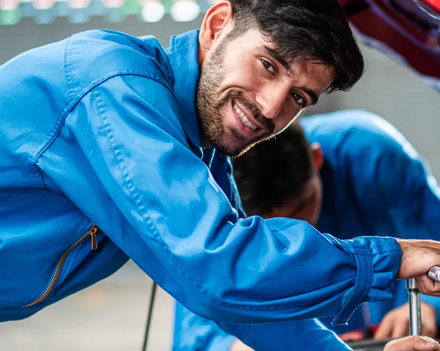

<ion-header>
  <ion-toolbar class="mi-toolbar">
   <ion-buttons slot="secondary">
 
     
     
   </ion-buttons>         
  </ion-toolbar>
 
 </ion-header>
 
 
 <ion-content class="background ion-padding ">
 
  <div class="ion-text-center">
    <br>
    <br>
    <br>
    <h1 style="font-size: 37px; color: #000000;"><strong>Mantenimiento</strong></h1>

    <h3 class="text">Selecciona tu mecánico de confianza</h3>
  </div>

  <div class="cuadritos">
    <ion-button fill="outline">
        
        Mecánico 1
    </ion-button>

    <ion-button fill="outline">
        
        Mecánico 2
    </ion-button>

    <ion-button fill="outline">
        
        Mecánico 3
    </ion-button>

    <ion-button fill="outline">
        
        Mecánico 4
    </ion-button>
</div>

  
  
    
  

      

   
 
 
 
  <div class="circle"></div>

 
  <div class="patron"></div>

 
 </ion-content>